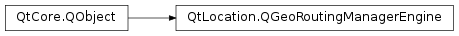

QGeoRoutingManagerEngine¶
Synopsis¶
Functions¶
- def
locale() - def
managerName() - def
managerVersion() - def
measurementSystem() - def
setLocale(locale) - def
setMeasurementSystem(system) - def
setSupportedFeatureTypes(featureTypes) - def
setSupportedFeatureWeights(featureWeights) - def
setSupportedManeuverDetails(maneuverDetails) - def
setSupportedRouteOptimizations(optimizations) - def
setSupportedSegmentDetails(segmentDetails) - def
setSupportedTravelModes(travelModes) - def
supportedFeatureTypes() - def
supportedFeatureWeights() - def
supportedManeuverDetails() - def
supportedRouteOptimizations() - def
supportedSegmentDetails() - def
supportedTravelModes()
Virtual functions¶
- def
calculateRoute(request) - def
updateRoute(route, position)
Detailed Description¶
The
PySide2.QtLocation.QGeoRoutingManagerEngineclass provides an interface and convenience methods to implementers ofPySide2.QtLocation.QGeoServiceProviderplugins who want to provide access to geographic routing information.Subclasses of
PySide2.QtLocation.QGeoRoutingManagerEngineneed to provide an implementation ofPySide2.QtLocation.QGeoRoutingManagerEngine.calculateRoute().In the default implementation, supportsRouteUpdates() returns false and
PySide2.QtLocation.QGeoRoutingManagerEngine.updateRoute()returns aPySide2.QtLocation.QGeoRouteReplyobject containing aQGeoRouteReply.UnsupportedOptionError.If the routing service supports updating routes as they are being traveled, the subclass should provide an implementation of
PySide2.QtLocation.QGeoRoutingManagerEngine.updateRoute()and call setSupportsRouteUpdates(true) at some point in time beforePySide2.QtLocation.QGeoRoutingManagerEngine.updateRoute()is called.The function setSupportsRouteUpdates() is one of several functions which configure the reported capabilities of the engine. If the capabilities of an engine differ from the default values these functions should be used so that the reported capabilities are accurate.
It is important that this is done before
PySide2.QtLocation.QGeoRoutingManagerEngine.calculateRoute(),PySide2.QtLocation.QGeoRoutingManagerEngine.updateRoute()or any of the capability reporting functions are used to prevent incorrect or inconsistent behavior.A subclass of QGeoRouteManagerEngine will often make use of a subclass fo
PySide2.QtLocation.QGeoRouteReplyinternally, in order to add any engine-specific data (such as aPySide2.QtNetwork.QNetworkReplyobject for network-based services) to thePySide2.QtLocation.QGeoRouteReplyinstances used by the engine.See also
PySide2.QtLocation.QGeoRoutingManager
-
class
PySide2.QtLocation.QGeoRoutingManagerEngine(parameters[, parent=nullptr])¶ Parameters: - parameters –
PySide2.QtCore.QVariantMap - parent –
PySide2.QtCore.QObject
Constructs a new engine with the specified
parent, usingparametersto pass any implementation specific data to the engine.- parameters –
-
PySide2.QtLocation.QGeoRoutingManagerEngine.calculateRoute(request)¶ Parameters: request – PySide2.QtLocation.QGeoRouteRequestReturn type: PySide2.QtLocation.QGeoRouteReplyBegins the calculation of the route specified by
request.A
PySide2.QtLocation.QGeoRouteReplyobject will be returned, which can be used to manage the routing operation and to return the results of the operation.This engine and the returned
PySide2.QtLocation.QGeoRouteReplyobject will emit signals indicating if the operation completes or if errors occur.Once the operation has completed,
QGeoRouteReply.routescan be used to retrieve the calculated route or routes.If
requestincludes features which are not supported by this engine, as reported by the methods in this engine, then aQGeoRouteReply.UnsupportedOptionErrorwill occur.The user is responsible for deleting the returned reply object, although this can be done in the slot connected to
QGeoRoutingManagerEngine.finished(),QGeoRoutingManagerEngine.error(),QGeoRouteReply.finished()orQGeoRouteReply.error()withPySide2.QtCore.QObject.deleteLater().
-
PySide2.QtLocation.QGeoRoutingManagerEngine.error(reply, error[, errorString=""])¶ Parameters: - reply –
PySide2.QtLocation.QGeoRouteReply - error –
PySide2.QtLocation.QGeoRouteReply.Error - errorString – unicode
- reply –
-
PySide2.QtLocation.QGeoRoutingManagerEngine.finished(reply)¶ Parameters: reply – PySide2.QtLocation.QGeoRouteReply
-
PySide2.QtLocation.QGeoRoutingManagerEngine.locale()¶ Return type: PySide2.QtCore.QLocaleReturns the locale used to hint to this routing manager about what language to use for addresses and instructions.
-
PySide2.QtLocation.QGeoRoutingManagerEngine.managerName()¶ Return type: unicode Returns the name which this engine implementation uses to distinguish itself from the implementations provided by other plugins.
The combination of and
PySide2.QtLocation.QGeoRoutingManagerEngine.managerVersion()should be unique amongst plugin implementations.
-
PySide2.QtLocation.QGeoRoutingManagerEngine.managerVersion()¶ Return type: PySide2.QtCore.intReturns the version of this engine implementation.
The combination of
PySide2.QtLocation.QGeoRoutingManagerEngine.managerName()and should be unique amongst plugin implementations.
-
PySide2.QtLocation.QGeoRoutingManagerEngine.measurementSystem()¶ Return type: PySide2.QtCore.QLocale.MeasurementSystemReturns the measurement system used by this manager.
If
PySide2.QtLocation.QGeoRoutingManagerEngine.setMeasurementSystem()has been called then the value returned by this function may be different to that returned byPySide2.QtLocation.QGeoRoutingManagerEngine.locale().PySide2.QtCore.QLocale.measurementSystem(). In which case the value returned by this function is what will be used by the manager.
-
PySide2.QtLocation.QGeoRoutingManagerEngine.setLocale(locale)¶ Parameters: locale – PySide2.QtCore.QLocaleSets the locale to be used by this manager to
locale.If this routing manager supports returning addresses and instructions in different languages, they will be returned in the language of
locale.The locale used defaults to the system locale if this is not set.
-
PySide2.QtLocation.QGeoRoutingManagerEngine.setMeasurementSystem(system)¶ Parameters: system – PySide2.QtCore.QLocale.MeasurementSystemSets the measurement system used by this manager to
system.The measurement system can be set independently of the locale. Both
PySide2.QtLocation.QGeoRoutingManagerEngine.setLocale()and this function set the measurement system. The value set by the last function called will be used.
-
PySide2.QtLocation.QGeoRoutingManagerEngine.setSupportedFeatureTypes(featureTypes)¶ Parameters: featureTypes – PySide2.QtLocation.QGeoRouteRequest.FeatureTypesSets the types of features that this engine can take into account during route planning to
featureTypes.It is important that subclasses use this method to ensure that the engine reports its capabilities correctly. If this function is not used the engine will report that it supports no feature types at all.
-
PySide2.QtLocation.QGeoRoutingManagerEngine.setSupportedFeatureWeights(featureWeights)¶ Parameters: featureWeights – PySide2.QtLocation.QGeoRouteRequest.FeatureWeightsSets the weightings which this engine can apply to different features during route planning to
featureWeights.It is important that subclasses use this method to ensure that the engine reports its capabilities correctly. If this function is not used the engine will report that it supports no feature weights at all.
-
PySide2.QtLocation.QGeoRoutingManagerEngine.setSupportedManeuverDetails(maneuverDetails)¶ Parameters: maneuverDetails – PySide2.QtLocation.QGeoRouteRequest.ManeuverDetailsSets the levels of detail for navigation maneuvers which can be requested by this engine to
maneuverDetails.It is important that subclasses use this method to ensure that the engine reports its capabilities correctly. If this function is not used the engine will report that it supports no maneuver details at all.
-
PySide2.QtLocation.QGeoRoutingManagerEngine.setSupportedRouteOptimizations(optimizations)¶ Parameters: optimizations – PySide2.QtLocation.QGeoRouteRequest.RouteOptimizationsSets the route optimizations supported by this engine to
optimizations.It is important that subclasses use this method to ensure that the engine reports its capabilities correctly. If this function is not used the engine will report that it supports no route optimizations at all.
-
PySide2.QtLocation.QGeoRoutingManagerEngine.setSupportedSegmentDetails(segmentDetails)¶ Parameters: segmentDetails – PySide2.QtLocation.QGeoRouteRequest.SegmentDetailsSets the levels of detail for routing segments which can be requested by this engine to
segmentDetails.It is important that subclasses use this method to ensure that the engine reports its capabilities correctly. If this function is not used the engine will report that it supports no segment detail at all.
-
PySide2.QtLocation.QGeoRoutingManagerEngine.setSupportedTravelModes(travelModes)¶ Parameters: travelModes – PySide2.QtLocation.QGeoRouteRequest.TravelModesSets the travel modes supported by this engine to
travelModes.It is important that subclasses use this method to ensure that the engine reports its capabilities correctly. If this function is not used the engine will report that it supports no travel modes at all.
-
PySide2.QtLocation.QGeoRoutingManagerEngine.supportedFeatureTypes()¶ Return type: PySide2.QtLocation.QGeoRouteRequest.FeatureTypesReturns the types of features that this engine can take into account during route planning.
-
PySide2.QtLocation.QGeoRoutingManagerEngine.supportedFeatureWeights()¶ Return type: PySide2.QtLocation.QGeoRouteRequest.FeatureWeightsReturns the weightings which this engine can apply to different features during route planning.
-
PySide2.QtLocation.QGeoRoutingManagerEngine.supportedManeuverDetails()¶ Return type: PySide2.QtLocation.QGeoRouteRequest.ManeuverDetailsReturns the levels of detail for navigation maneuvers which can be requested by this engine.
-
PySide2.QtLocation.QGeoRoutingManagerEngine.supportedRouteOptimizations()¶ Return type: PySide2.QtLocation.QGeoRouteRequest.RouteOptimizationsReturns the route optimizations supported by this engine.
-
PySide2.QtLocation.QGeoRoutingManagerEngine.supportedSegmentDetails()¶ Return type: PySide2.QtLocation.QGeoRouteRequest.SegmentDetailsReturns the levels of detail for routing segments which can be requested by this engine.
-
PySide2.QtLocation.QGeoRoutingManagerEngine.supportedTravelModes()¶ Return type: PySide2.QtLocation.QGeoRouteRequest.TravelModesReturns the travel modes supported by this engine.
-
PySide2.QtLocation.QGeoRoutingManagerEngine.updateRoute(route, position)¶ Parameters: - route –
PySide2.QtLocation.QGeoRoute - position –
PySide2.QtPositioning.QGeoCoordinate
Return type: Begins the process of updating
routebased on the current positionposition.A
PySide2.QtLocation.QGeoRouteReplyobject will be returned, which can be used to manage the routing operation and to return the results of the operation.This engine and the returned
PySide2.QtLocation.QGeoRouteReplyobject will emit signals indicating if the operation completes or if errors occur.If supportsRouteUpdates() returns false an
QGeoRouteReply.UnsupportedOptionErrorwill occur.Once the operation has completed,
QGeoRouteReply.routescan be used to retrieve the updated route.The returned route could be entirely different to the original route, especially if
positionis far enough away from the initial route. Otherwise the route will be similar, although the remaining time and distance will be updated and any segments of the original route which have been traversed will be removed.The user is responsible for deleting the returned reply object, although this can be done in the slot connected to
QGeoRoutingManagerEngine.finished(),QGeoRoutingManagerEngine.error(),QGeoRouteReply.finished()orQGeoRouteReply.error()withPySide2.QtCore.QObject.deleteLater().- route –
© 2018 The Qt Company Ltd. Documentation contributions included herein are the copyrights of their respective owners. The documentation provided herein is licensed under the terms of the GNU Free Documentation License version 1.3 as published by the Free Software Foundation. Qt and respective logos are trademarks of The Qt Company Ltd. in Finland and/or other countries worldwide. All other trademarks are property of their respective owners.